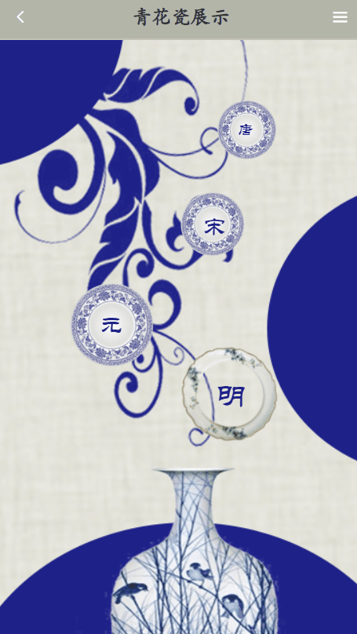

3d陶瓷展示
在线链接项目背景： 以中国古代陶瓷的发展和风格变化为主题设计。用户在首页可以选择不同朝代的陶瓷，项目将以3D形式展示该时期的系列典型陶瓷，同时用户可以和陶瓷进行一定的交互（缩放旋转），点击按钮切换陶瓷的花纹颜色以及陶瓷的模型。也可以选择上方按钮进行文字介绍和语音介绍。
项目亮点1. vue-cli vue-router 工程化项目搭建 2. vant框架 移动端组件风格、 3. threejs 模型展示和交互（缩放旋转） 5. vuex和Cookie存储数据，减少请求发送 6. aixos封装请求，mockjs拦截实现前后端分离
